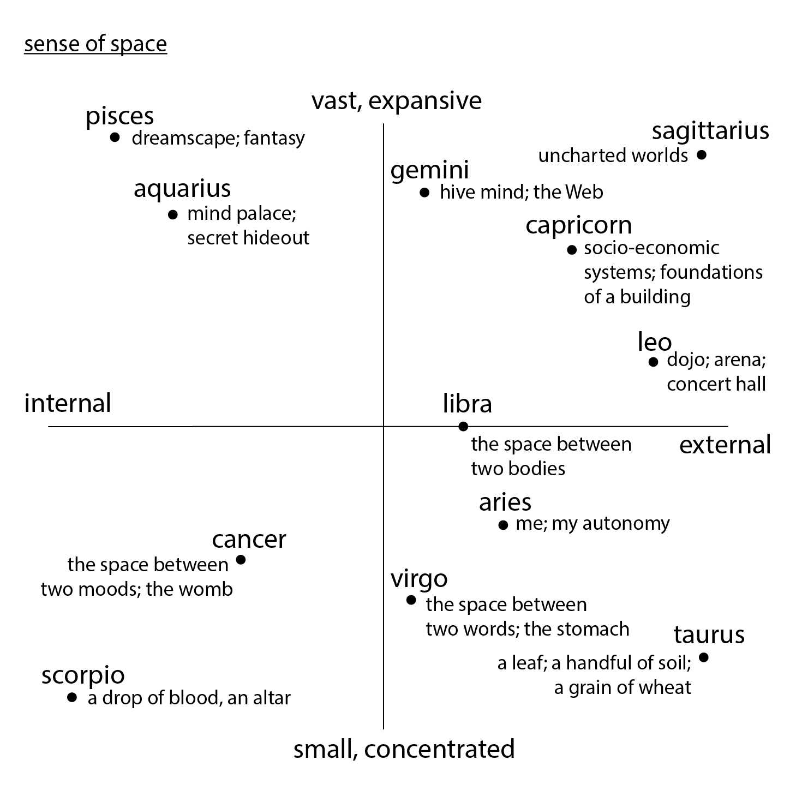
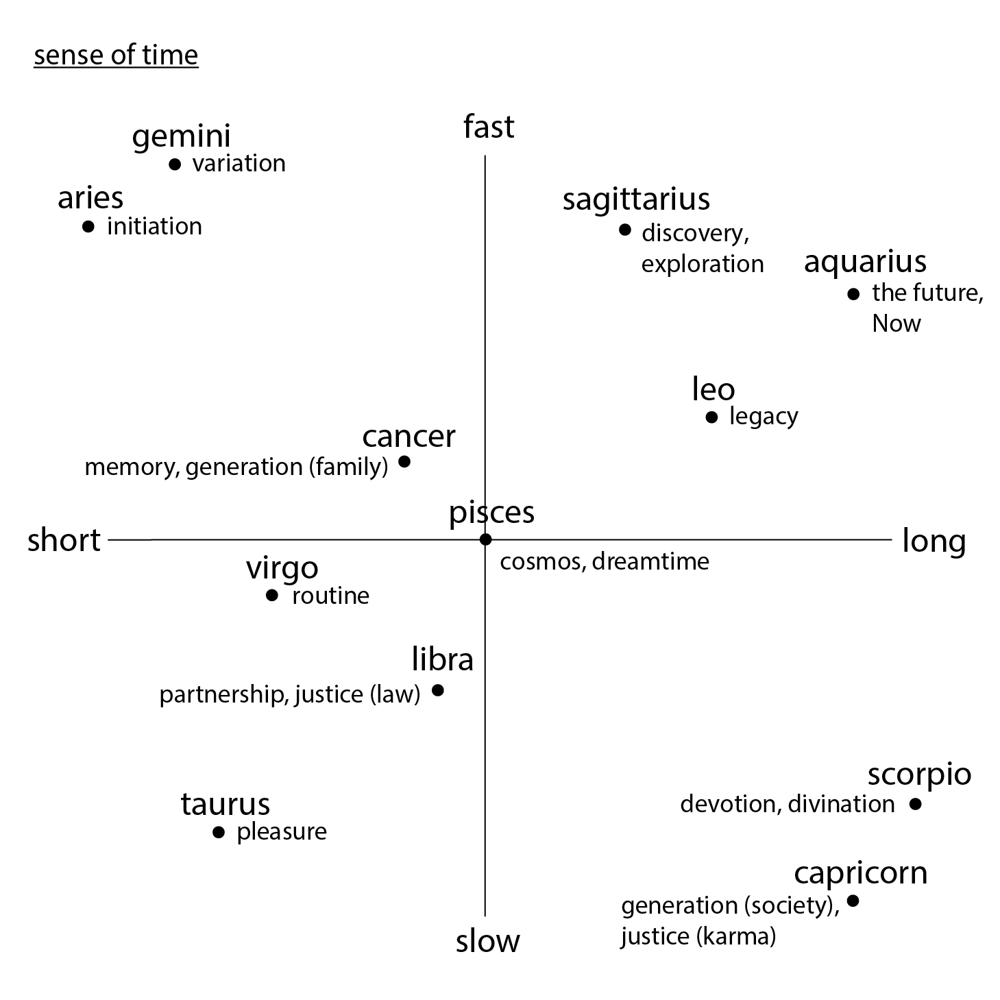

╭────-·-ˋˏ-༻𖤓༺-ˎˊ·-────╮
╰────-·-ˋˏ-༻𖤓༺-ˎˊ·-────╯
last updated: 11/05/2026
state: sleepy / season: fallow / mode: hermit
Slow period of burrowing, nesting, hibernating. Probably moving at 60-70%. Delaying tasks. Enjoying it. Energetic resources directed into what is immediate, proximal, and felt, rather than ideas, concepts, and wider connections. Socially withdrawn, in a good way I think.
It's odd to experience what feels like such a small mental scope and range of input for what feels like the first time in my life, but I deeply appreciate it. Perhaps I am slightly burnt out, now without the internal patterns that usually lead me to refuse the dip and the process of moving through it. I don't feel pressed to define or understand this so much as immerse as fully as possible in its fatigue, silence, and pleasure.
Mostly directing, producing, and fundraising for Descendants by zone 境 (25-27 September 2026 at 42WS Black Box, Singapore); developing an interactive fiction game about being a young therapist; and resting intensely to balance an intensifying fitness routine. Incrementally filling out the Projects and Publications pages on this site.
Trying to read but mostly occupied with indie games.
Open to connect & collaborate for June to July 2026 and November 2026 onwards.
🙪 kyatos (at) protonmail (dot) com
Read more about working with me.
I'm kyatos / Ang Kia Yee (she/her), a transdisciplinary poet, performance-maker, and slow dream machine who believes in our capacity for compassion, rupture, agency, and change.
I devise speculative, mutative fictions which offer tethers to alternative worlds, bodily states, systems, and relationships. I see such work as forms of adaptive radiation and oracular intervention.
My work has spanned poetry, essays, short stories, plays, performances, audio walks, workshops, and video. It also encompasses counselling work and astrology readings.
In art and writing, I like to make work that is mysterious, atmospheric, temporally-layered, and unknowing. Playing across disciplines, forms, and media, I operate using the logic of poetry — what Carl Phillips describes as patterned language and the meaningful interruption of those patterns.
The fullness of life asks us to be here and now, and this is where I situate myself and my practice.
I was a resident artist for the 2025 AiR Programme at The Godown Arts Centre, Kuala Lumpur and the 2024 Residency at the Intercultural Theatre Institute; a participating artist for Natasha, Singapore Biennale 2022; and a resident writer for Centre 42’s New Scripts Residency 2021.
My writing has appeared in Stand Magazine, Quarterly Literary Review Singapore, SO-FAR, Plural Art Mag, and for exhibitions at Objectifs and Singapore Art Museum.
As a performance-maker, I co-/directed Descendants (2024-ongoing), an interdisciplinary reimagination of Descendants of the Eunuch Admiral by Kuo Pao Kun; Triumph of Our Tired Eyes (2018), an adaptation of Chekhov's Uncle Vanya; and Flicker (2015), a self-written script on loneliness and connection.
I co-/created and performed in sentry (2018) as part of Festival of Audacity in Birmingham, UK; Saint Somebody (2019) at Camden People's Theatre, UK; Loving Things (2020-2021) as a performance video and live excerpt at the Esplanade Concourse, Singapore; and FUME (2022) by Pat Toh at 72-13, Singapore.
I recently founded a theatre collective called zone (境). I am the Co-Founder & was the Company Lead (2020-2024) of Feelers, a research lab of artists and designers focused on the intersections of art and technology. From 2015-2017, I co-founded and co-led theatre collective make/space.
performance as gathering, witnessing, dream, speculation, devotion, prayer
body as conduit, organ, instrument, life, processor / body as it is
If every gathering is an opportunity for alternative relations and world-building to take place, a collective is a commitment to a shared set of relations and worlding, which can become a sustained intervention upon the wider ecosystems it is nested within.
Persisting as any collective is the hardest and most important work we can do together.
Founder & Artistic Director
A cross-disciplinary theatre company founded in 2025 which gathers at the borders where language fails, to do the impossible work of expressing the unspeakable and unnameable. By conjuring transient zones where alternative realities and ways of being are possible, we remind ourselves of the possibilities of the impossible.
Co-Founder & Company Lead (2020-2024)
A research lab of artists and designers focused on the intersections of art and technology.
Initiated Feelers in 2020 alone, desiring a space to critically and humanely engage with technology, as well as organizational practices that would allow artists to work full-time while developing their artistic practices with nourishing rhythms.
Built core team of five artists and designers; developed company ethos; established criticality, play, and interdisciplinarity as central approaches. Experimented with looser, more flexible scheduling structures to allow for artist-workers to effectively continue their individual creative practices.
Notable initiatives:
"While art and technology form key fields of research, they continually lead us back to one another. It is with one another that our real work takes place."
Co-Founder
A youth theatre collective that existed from 2015-17. We made original, experimental, ensemble-centric performances that challenged mainstream narrativity and visual language with a turn to symbolic dissonance and the body.
Co-founded and co-led the group, working variously as director, playwright, producer, production manager, and marketing manager.
I am a novice astrologer building my fundamental knowledge of the field and developing my astrological ethos. My practice is informed by the teachings and writings of Chris Brennan, Austin Coppock, Melanie Reinhart, and Alice Sparkly Kat.
I occasionally offer natal chart readings. Do sign up for my mailing list to be alerted when that happens.
My astrological ethos borrows from the general ethos of counselling, which focuses on aiding you in your process of understanding and making meaning of your life on your terms. I serve as a mirror and temporary companion on your journey, without deciding for you what it means and what you must do.
I believe in considering astrological weather as a set of potential energies (with varying probabilities), but not as diagnostic, directive, or predictive indicators which undercut your agency as a living conscious being. We are not in full control of our lives, and these indicators can signal incoming energies and possibilities we should attend to. But they don't direct our lives. Rather, they offer collaborative energies - challenging, neutral, or smooth-flowing - which interact with our individual and collective patterns to produce life. We are ecological.
An astrological reading is not coaching or therapy, but a collaborative intervention where I act as your astrological interpreter and facilitator. We think and feel aloud, in conversation, as to what feels resonant/ difficult/ luminous/ important for you as we speak.
And yes, you can see it all as myth and fiction — the powerful narrative energies and archetypes which have always profoundly shaped our shared lives and resonated against the deep energetic pathways that flow under the surface of reality. It doesn't have to be real for it to be truthful or true. And vice versa.


writing as inquiry, divination, revelation, collusion, conspiracy, dreaming, prayer
writer as conduit for mystery
I send occasional email updates about what I'm up to. Submit this form to join it. Your email will not be shared or used for anything else.